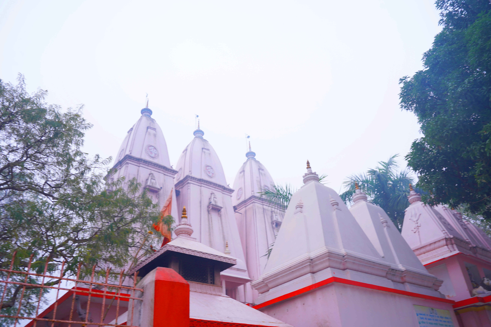
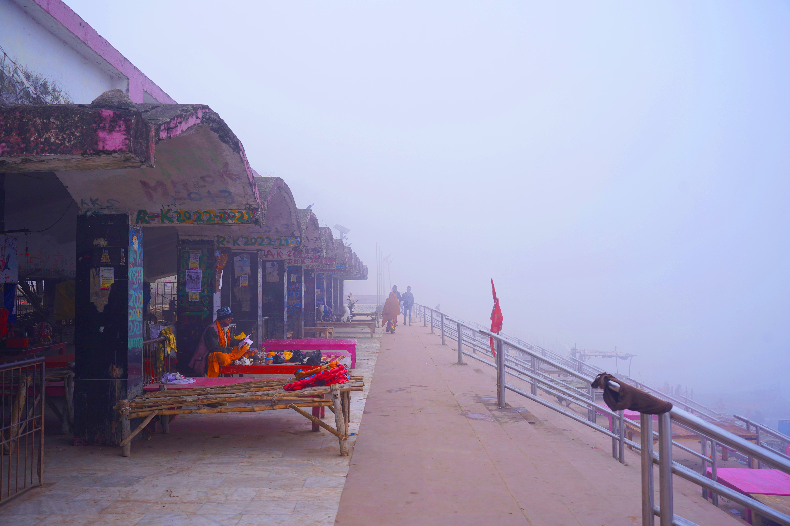

This is page containing information about some best places in Buxar
For Exploring Buxar kindly scroll
Shree nath baba Mandir
Sri Nath Baba Mandir is in the Charitra Van at Buxar.
The temple is dedicated to Lord Shiva and a lot of devotees come here to pray. It is a holy and
divine place and the faith of people in this temple is unbelievable.
The temple is always buzzing with devotees and the interior beauty of here is enchanting.

Ram rekha ghat
Ram Rekha Ghat is an important religious place located in the Buxar district which is associated
with the Ramayana period. There is a mythology associated with this ghat on the banks of the river
Ganges that when Lord Shri Ram was accused of killing a woman after killing Tadka and to get rid of
that sin, he went to the same nearby Ganges bank and took a bath. Near the same ghat, Lord Shri Ram
made a Shivling out of clay and worshiped, while starting a water bath to the Shivling, then the
soil started flowing due to the rawness, then Shri Ram put his hand on the Shivling and then took a
water bath, but after removing his hand, Lord Shri Ram's hand’s line was inscribed on the Shivling
as well as his footprints were printed on the soil there.
Shivling is still in existence at Ram Rekha Ghat. This Ghat in itself reflects the feeling of
devotion and reverence. Devotees always come and worship at this holy land

Navlakha Mandir
Navlakha Temple is a beautiful religious place in Buxar. The architecture of the temple is
attractive which reminds of the South Indian temples.
The entrance of the temple shows its grandeur, and the outer of the temple is decorated with
beautiful idols, where you can see magnificent architectural mixes.
Devotees come along from different places to visit the temple and it is among the heritages of the
district.
Brahameshwar Nath Temple
Brahmeshwar Temple is the most ancient and sacred place of Buxar district.
The temple is dedicated to Lord Shiva and a lot of devotees come here with the wishes and they
believe that their wishes get fulfilled with the grace of God.
During Shivaratri, a mass level of devotees used to gather here. Devotees from across different
places come to visit the temple to get blessed.